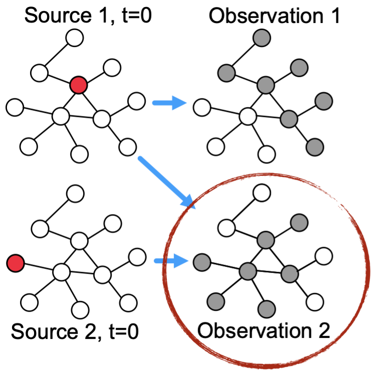
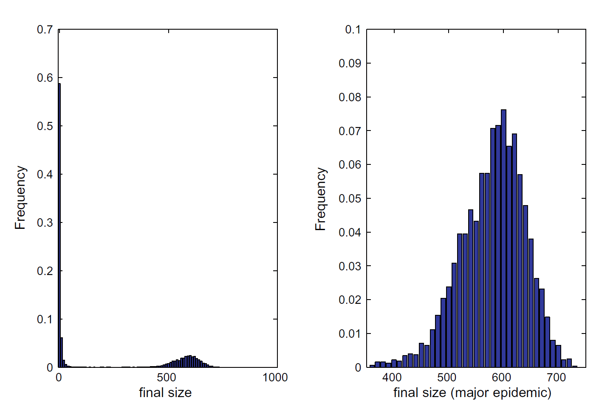

Rumor Can Cost Live
Ref: Dynamical interplay between awareness and epidemic spreading in multiplex networks — Granell, Gomez, Arenas — Physical Review Letters — 2013.
Two Systems Never Touch — Yet Risk Couples

How can two unconnected networks still couple and amplify risk?
During COVID, misinformation and disease did not interact directly, but they coupled through human decisions. A rumor changes beliefs, beliefs change actions, and actions change exposure. That is the kind of coupled network dynamics I study. These systems do not touch, yet they amplify each other.
Ref: Dynamical interplay between awareness and epidemic spreading in multiplex networks — Granell, Gomez, Arenas — Physical Review Letters — 2013.
Cascades Across Networks

A tiny perturbation can be amplified by nonlinear dynamics into a large system-level shift.

Risk can propagate across domains: information to behavior to health to mobility to supply chain.
Ref: Dynamical interplay between awareness and epidemic spreading in multiplex networks — Granell, Gomez, Arenas — Physical Review Letters — 2013.
Graph dynamics are everywhere


More edges can make a network worse
What about cutting off some roads?
More edges can make a network worse
What about cutting off some roads?
More roads lead to higher commute time.
Ref: Steinberg, R., & Zangwill, W. I. (1983). The prevalence of Braess' paradox. Transportation Science, 17(3), 301-318.
Why Graph Dynamics Under Uncertainty Is Hard


Heterogeneous: different domains have different state variables and data fidelity.
Coupling: interactions happen through intermediate layers (policy/behavior/market mechanisms).
Interdisciplinary: models exist in silos; cross-domain reuse is still rare.
- Common bottleneck: pairwise/local reasoning breaks under interactions and uncertainty.
- Therefore we need a tutorial that is task-centered and uncertainty-aware.
Ref: Temporal networks — Holme, Saramaki — Physics Reports — 2012.
Influence Maximization as a Problem

Which 3 people should we seed first to maximize influence spread?
Combinatorial search space: in a 100-person community with \(k=3\), there are \(\binom{100}{3}=161{,}700\) possible seed sets.
Even a small community yields a large optimization problem before uncertainty is added.
Ref: Maximizing the Spread of Influence through a Social Network — Kempe, Kleinberg, Tardos — KDD — 2003.
Source Localization as a Problem
Challenge 1: one snapshot of a cascade.
Challenge 2: more than 1 source node: DDoS attack, Financial Crash, Power Failure.
Challenge 3: many explanations fit the same observation.
Search difficulty: searching in a huge space of possible node sets.
Ref: Multiple-source localization from a single-snapshot observation using graph Bayesian optimization — Zhang, Zonghan, Zijian Zhang, Zhiqian Chen — AAAI — 2024.
What Is Uncertainty Quantification?
From point estimate to decision-ready uncertainty.
Core Question
How sure are we, and what is the cost if this estimate is wrong?
Term 1: Parameter uncertainty
\[ p(\theta \mid \mathcal{D}) \]
\(\theta\) is the model-parameter vector and \(\mathcal{D}\) is observed data. This posterior distribution tells us which parameter values remain plausible after seeing evidence.
Term 2: Predictive uncertainty
\[ p(y^\ast \mid \mathcal{D}) \]
\(y^\ast\) is a future quantity of interest. This predictive distribution tells us how uncertain future outcomes are, conditioned on the observed data.
Ref: Bayesian Data Analysis (3rd ed.) — Gelman, Carlin, Stern, Dunson, Vehtari, Rubin — CRC Press — 2013.
Prior, Likelihood, Posterior (Bayes Update)
Step 1 — Inference
\[ \overbrace{p(\theta\mid\mathcal{D})}^{\text{posterior}} \propto \overbrace{p(\mathcal{D}\mid\theta)}^{\text{likelihood}} \overbrace{p(\theta)}^{\text{prior}} \]
Input: prior \(p(\theta)\), data \(\mathcal{D}\)
Output: posterior \(p(\theta\mid\mathcal{D})\)
Step 2 — Prediction
\[ \overbrace{p(y^\ast\mid\mathcal{D})}^{\text{predictive}} \propto \overbrace{p(y^\ast\mid\theta)}^{\text{forward model}} \overbrace{p(\theta\mid\mathcal{D})}^{\text{parameter posterior}} \]
Input: posterior \(p(\theta\mid\mathcal{D})\), model \(p(y^\ast\mid\theta)\)
Output: predictive uncertainty \(p(y^\ast\mid\mathcal{D})\)

Ref: Bayesian Data Analysis (3rd ed.) — Gelman, Carlin, Stern, Dunson, Vehtari, Rubin — CRC Press — 2013.
Aleatoric vs Epistemic Uncertainty
Aleatoric
- Inherent randomness in data generation.
- Examples: measurement noise, random contacts.
- Not eliminated by collecting more data.
Epistemic
- Uncertainty from limited data/model mismatch.
- Examples: unknown parameters, missing mechanisms.
- Can shrink with better data or better models.
\[ \mathrm{Var}(Z)=\mathbb{E}[\mathrm{Var}(Z\mid\Theta)] + \mathrm{Var}(\mathbb{E}[Z\mid\Theta]) \]
\(\mathbb{E}[\mathrm{Var}(Z\mid\Theta)]\): aleatoric part \(\mathrm{Var}(\mathbb{E}[Z\mid\Theta])\): epistemic part

Key point: more data mainly reduces epistemic uncertainty, not aleatoric noise.
UQ lifecycle
I. Uncertainty Representation
Mathematize uncertainty before forward simulation.
| Track | Representative Techniques |
|---|---|
| Static | Probability measureRandom variablesRandom fieldsKL expansionGaussian processGaussian random fieldCopula modelsMixture models |
| Dynamic | Bayesian inferencePosterior measureLaplace approximationVariational inferenceMCMCHMC |
II. Uncertainty Propagation
Propagate uncertain inputs to uncertain outputs.
| Track | Representative Techniques |
|---|---|
| Static | Monte CarloQuasi-Monte CarloMulti-level Monte CarloImportance samplingPCEgPCStochastic GalerkinStochastic collocationSparse grid |
| Dynamic | KL + FEMStochastic finite elementsSequential propagation |
III. Sequential / State-Space UQ
Recursively update uncertainty over time.
| Track | Representative Techniques |
|---|---|
| Static | Offline initializationSupport role |
| Dynamic | Kalman filterEKFUKFEnKFParticle filterSMCRTS smoother |
IV. Sensitivity & Decomposition
Identify dominant sources of uncertainty.
| Track | Representative Techniques |
|---|---|
| Static | Sobol indicesTotal Sobol indexFASTMorris screeningDerivative-based sensitivityModel discrepancy |
| Dynamic | Time-resolved sensitivityTemporal discrepancy tracking |
V. Inverse UQ
Infer unknown parameters from data.
| Track | Representative Techniques |
|---|---|
| Static | Bayesian inverse problemsPosterior over parametersMAP estimationTikhonovSparse priors |
| Dynamic | Data assimilation4D-VarBayesian updating |
VI. Risk & Reliability
Quantify tail risk and robustness.
| Track | Representative Techniques |
|---|---|
| Static | FORMSORMSubset simulationImportance samplingVaRCVaRWasserstein DROf-divergence DRO |
| Dynamic | Time-dependent reliabilitySequential rare-event control |
VII. Distribution-Free UQ
Guarantee coverage without strong assumptions.
| Track | Representative Techniques |
|---|---|
| Static | Conformal predictionSplit conformalJackknife+Coverage control |
| Dynamic | Online conformalAdaptive coverage control |
Refs: Bayesian Data Analysis (Gelman et al., 2013); Global Sensitivity Analysis (Saltelli et al., 2008); A New Approach to Linear Filtering and Prediction Problems (Kalman, 1960); Algorithmic Learning in a Random World (Vovk et al., 2005).
Graph Dynamics: What Are the Random Variables?
Define objects first, then specify evolution and observation.
Core Variables
| Symbol | Role | Everyday Reading |
|---|---|---|
| \(A_t\) | Time-varying connectivity | Who contacts whom at day \(t\) (home, office, transit). |
| \(X_t\) | Hidden system state | Unobserved status (infected, informed, traveling, etc.). |
| \(Y_t\) | Noisy observation | What sensors/reports actually record. |
| \(\theta\) | Dynamic parameters | Transmission, recovery, policy, and coupling strength. |
State-Space Dynamics
State Evolution
\[ X_{t+1} = F(X_t, A_t; \theta) + w_t \]
State/Observation Dimensions
\[ A_t \in \{0,1\}^{n\times n},\quad X_t \in \mathbb{R}^{n\times d},\quad Y_t \in \mathbb{R}^{m} \]
Ref: Temporal networks — Holme, Saramaki — Physics Reports — 2012.
Three Entry Points of Uncertainty in Graph Dynamics
Each source enters at a different location, and all must be modeled jointly to avoid overconfidence.
Structural uncertainty \((A_{ij,t})\)
E + AWe do not observe all true contacts; edges can be missing or misrecorded.
\[ A_{ij,t}\sim \mathrm{Bernoulli}(p_{ij,t}) \]
Parametric uncertainty \((\theta)\)
ETransmission or coupling strengths shift across office, dormitory, and transit settings.
\[ \theta \sim p(\theta\mid \mathcal{D}) \]
Observational uncertainty \((\varepsilon_t, R_t)\)
AReports are delayed/noisy and sensing quality can drift over time.
\[ Y_t = H_t X_t + \varepsilon_t,\quad \varepsilon_t\sim \mathcal{N}(0,R_t) \]
Ref: Discovering Latent Network Structure in Point Process Data — Linderman, Adams — ICML — 2014.
2.12: What Existing Graph-UQ Surveys Still Miss
Table A: Representation + Propagation + Sequential UQ
| Axis | Technique | Wang | Chen |
|---|---|---|---|
| Representation | Random variable / posterior | ||
| Representation | Gaussian Process | ||
| Representation | Random field / KL expansion | ||
| Representation | Copula / stochastic field | ||
| Propagation | Monte Carlo | ||
| Propagation | Polynomial Chaos (PCE) | ||
| Propagation | Stochastic Galerkin | ||
| Propagation | KL expansion for propagation | ||
| Sequential / Dynamic UQ | Kalman Filter | ||
| Sequential / Dynamic UQ | EKF / UKF | ||
| Sequential / Dynamic UQ | Ensemble Kalman | ||
| Sequential / Dynamic UQ | Particle Filter | ||
| Sequential / Dynamic UQ | Data Assimilation |
Table B: Sensitivity + Inverse + Risk + Distribution-Free + SDE
| Axis | Technique | Wang | Chen |
|---|---|---|---|
| Sensitivity | Sobol indices | ||
| Sensitivity | Variance decomposition | ||
| Sensitivity | Morris / FAST | ||
| Inverse problems | Bayesian inverse problem | ||
| Inverse problems | Ill-posedness regularization | ||
| Risk and reliability | FORM / SORM | ||
| Risk and reliability | Rare event simulation | ||
| Risk and reliability | CVaR | ||
| Risk and reliability | DRO | ||
| Distribution-free | Conformal prediction | ||
| Calibration | ECE / Brier | ||
| SDE-based | Neural SDE |
Coverage deficit at a glance
Condensed comparison of the two existing surveys
| Core area | Wang | Chen |
|---|---|---|
| Bayesian + GP | ||
| Conformal + calibration | ||
| Sequential UQ (Kalman family) | ||
| Spectral propagation (PCE/KL) | ||
| Sensitivity + reliability |
Add our tutorial column: full core coverage
| Core area | Wang | Chen | Tutorial |
|---|---|---|---|
| Bayesian + GP | |||
| Conformal + calibration | |||
| Sequential UQ (Kalman family) | |||
| Spectral propagation (PCE/KL) | |||
| Sensitivity + reliability |
Three major gaps in current graph-UQ survey coverage
Ref: Wang et al., Uncertainty in Graph Neural Networks: A Survey (TMLR 2024); Chen et al., Uncertainty Quantification on Graph Learning: A Survey (2024).
Tutorial Agenda
The six tasks form one practical pipeline from uncertain evidence to deployable decisions.
- A estimates uncertain structure and parameters from observed data.
- B, C, D are parallel analyses that consume A: forecasting, source explanation, and hidden-state estimation.
- E turns model outputs into intervention choices under uncertainty.
- F verifies calibration and reliability before real deployment.
Diffusion Forecasting
Forward and Backward Diffusion · Feb 22, 2026 · Zonghan Zhang
Uncertainty in Graph Diffusion
$$Y = F(\mathbf{A},\omega,\Theta,I_0)$$
- $\mathbf{A}$: graph structure
- $\omega$: stochastic realization
- $\Theta$: diffusion parameters
- $I_0$: initial seeds
- $Y$: cascade outcome
Structural Amplification of Uncertainty
$$(\textcolor{red}{\mathbf{A}},\omega,\Theta,I_0)\rightarrow Y$$
- Spectral quantity: $\rho(\mathbf{A})$.
- Rates: $\beta$ (infection), $\delta$ (recovery), network size $n$.
- Representative condition: $$\rho(\mathbf{A}) < \frac{1}{\beta}$$
- Representative bound: $$E(\tau)\leq\frac{\log(n)+1}{1-\beta\rho(\mathbf{A})}$$
Ganesh, Massoulie, Towsley (IEEE INFOCOM, 2005)
Intrinsic Stochastic Uncertainty
$$(\mathbf{A},\textcolor{red}{\omega},\Theta,I_0)\rightarrow Y$$
- Even fixed $(\mathbf{A},\Theta,I_0)$ yields variable outcomes due to $\omega$.
- Final size is distributional, not deterministic.
- Uncertainty remains substantial at finite $n$.
Britton (Mathematical Biosciences, 2010)
Intrinsic Uncertainty: Final Size Approximation
- Mean equation: $$z = 1-e^{-R_0z}$$
- Example setting in source deck: $n=1000$, $m=1$, $R_0=1.5$.
- Example values: $$z^*\approx0.583,\quad Z_n\approx583,\quad \mathrm{STD}\approx58.0$$
Intrinsic Stochastic Uncertainty (Simulation View)
Left: all simulations. Right: major-epidemic outcomes.
Input / Parameter Uncertainty
$$(\mathbf{A},\omega,\textcolor{red}{\Theta,I_0})\rightarrow Y$$
$$Y=f(X_1,X_2,\ldots,X_n)$$
- Variance decomposition identifies dominant uncertain inputs.
- $X_i$ can represent seed indicators or uncertain parameters.
Zhang and Chen (SDM, 2023)
Tools of Uncertainty Decomposition
Variance sensitivity and interaction effects.
Attribution decomposition across inputs.
What Is Sobol's Indices (First-Order Effect)
- First-order effect: how much variance node \(i\) explains alone.
- First-order contribution is the variance explained by one variable alone.
$$S_i := \frac{\mathbb{V}_{X_i}\!\left[\mathbb{E}_{X_{\sim i}}\!\left(Y \mid X_i\right)\right]}{\mathbb{V}(Y)}$$
If \(i\) is important, then \(\mathbb{E}(Y \mid X_i)\) changes a lot and \(\mathbb{V}_{X_i}\!\left[\mathbb{E}(Y \mid X_i)\right]\) is large.
What Is Sobol's Indices (Set Effect)
- Set effect: how much variance the pair \((i,j)\) explains together.
$$S_{ij} := \frac{\mathbb{V}_{X_i,X_j}\!\left[\mathbb{E}_{X_{\sim ij}}\!\left(Y \mid X_i, X_j\right)\right]}{\mathbb{V}(Y)}$$
If \(i\) is important in the \((i,j)\) set, then \(\mathbb{E}(Y \mid X_i, X_j)\) changes a lot and \(\mathbb{V}_{X_i}\!\left[\mathbb{E}(Y \mid X_i, X_j)\right]\) is large.
Baseline: Variance of \(Y\).
What Is Sobol's Indices (Higher-Order Effect)
Higher-order effect:
$$S_{ij}^{(H)}=\frac{\mathbb{V}_{ij}^{(H)}}{\mathbb{V}(Y)}=S_{ij}-S_i-S_j$$
Examples: Sobol vs Shapley (XOR)
- XOR toy model exposes the difference between sensitivity and attribution.
- Next slide shows exact values side-by-side with the truth table.
Source Explaination
2.1 What Is an Inverse Problem?
Forward: $$(\mathbf{A},\omega,\Theta,I_0)\rightarrow Y$$
Backward: $$Y\rightarrow(\mathbf{A},\omega,\Theta,I_0)$$
2.2 Recover Graph Topology
$$Y\rightarrow(\textcolor{red}{\mathbf{A}},\omega,\Theta,I_0)$$
- Infer diffusion network from cascade observations.
- Sparse reconstruction under edge budget constraints.
Gomez-Rodriguez, Leskovec, Krause (TKDD, 2012)
Recover Graph Topology (Figure)
Continuation figure from source deck.
2.4 Sensitivity Analysis for Parameters
$$Y\rightarrow(\mathbf{A},\omega,\textcolor{red}{\Theta},I_0)$$
- Identifiability degrades if $$\frac{\partial Y}{\partial\Theta}\approx0.$$
- Methods: Morris, Sobol, sensitivity heat-map approaches.
Wu et al. (J. R. Soc. Interface, 2013)
2.6 Likelihood-Based Source Localization
$$Y\rightarrow(\mathbf{A},\omega,\Theta,\textcolor{red}{I_0})$$
- Posterior objective: $$I_0^\star=\arg\max_{I_0\subseteq V,\ |I_0|=k}p(I_0\mid Y,\mathbf{A},\Theta)$$
- Likelihood form: $$\mathcal{L}(I_0)=\prod_{v\in V_I}P(v\in Y\mid I_0,\mathbf{A},\Theta)\prod_{u\notin V_I}\left(1-P(u\in Y\mid I_0,\mathbf{A},\Theta)\right)$$
- Bayesian optimization step: $$I_0^{(t+1)}=\arg\max_{I_0}\left[\mu_t(I_0)+\kappa\,\sigma_t(I_0)\right]$$
Zhang, Zhang, and Chen (AAAI, 2024)
From Forward Propagation to Inverse Recovery
$$Y=F(\mathbf{A},\Theta,\omega,I_0)$$
Structural amplification
Stochastic variability
Sensitivity and interaction
Parameter identifiability
Likelihood-based source localization
Source Explanation
Overview of source explanation under uncertain transmission pathways.
Source Explanation: Research Papers
Representative papers on source tracing, explanation quality, and uncertainty calibration.
State Estimation for Dynamical Networks
Tracking latent node states from noisy, partial observations over time.
Roadmap
- Problem setup: state-space models on graphs and uncertainty sources.
- Classical estimators: KF, EKF, UKF, and distributed consensus filtering.
- Graph-native estimators: graph priors, spectral ideas, and graph EKF/UKF.
- Modern layers: neural-aided filtering, calibration, and dynamic-graph tracking.
State-Space Model on a Network
$x_{t+1} = f_t(x_t, A_t) + w_t,\;\; y_t = h_t(x_t, A_t) + v_t$
- $x_t \in \mathbb{R}^n$: latent node states (congestion, infection load, demand, etc.).
- $A_t$: network structure or coupling operator (fixed or time-varying).
- Goal: estimate $p(x_t \mid y_{1:t})$ (filtering) and optionally $p(x_{1:T}\mid y_{1:T})$ (smoothing).
Sources of Uncertainty in Estimation
Stochastic evolution, unmodeled shocks, hidden exogenous drivers.
Sensor error, packet loss, quantization, reporting delay.
Wrong transition function, wrong linearization, misspecified covariances.
Missing edges, time-varying connectivity, uncertain weights.
Kalman Filter Recap: Predict to Update
$x_{t|t-1}=F x_{t-1|t-1},\;\; P_{t|t-1}=F P_{t-1|t-1}F^\top + Q$
$K_t=P_{t|t-1}H^\top (H P_{t|t-1} H^\top + R)^{-1},\;\; x_{t|t}=x_{t|t-1}+K_t(y_t-Hx_{t|t-1})$
- Optimal for linear-Gaussian systems under correct $Q,R$.
- Posterior covariance $P_{t|t}$ is the uncertainty object we act on.
Reference: Kalman (1960)
EKF vs UKF: Nonlinear Intuition
- EKF: linearize $f,h$ locally via Jacobians, then run KF updates.
- UKF: propagate sigma points through true nonlinear maps; no explicit Jacobian.
- Rule of thumb: EKF is cheaper; UKF is often more stable under stronger nonlinearity.
References: Li et al. (2023), Sagi et al. (2023)
Centralized vs Distributed Filtering
- Centralized: global fusion center, statistically efficient, communication heavy.
- Distributed: local estimators + neighbor communication, scalable and fault tolerant.
- Main tradeoff: estimation optimality vs communication and synchronization cost.
Distributed Kalman Filter with Consensus
$x_i^{(k+1)} = x_i^{(k)} + \sum_{j \in \mathcal{N}_i} c_{ij}\left(x_j^{(k)} - x_i^{(k)}\right)$
- Each node runs local predict-update and then consensus fusion over neighbors.
- Consensus rounds reduce disagreement from partial local views.
- Convergence depends on graph connectivity, weights, and communication delay.
Reference: Olfati-Saber (2005/2007)
DKF: Algorithm Loop per Time Step
- Local predict: propagate $(x_{i,t-1|t-1}, P_{i,t-1|t-1})$ using local dynamics.
- Local update: assimilate local measurement $y_{i,t}$.
- Consensus fusion: exchange estimates/covariances with neighbors.
- Optional covariance inflation: stabilize under mismatch and delayed packets.
Scalability: Localization Idea (Traffic)
- Partition a large road graph into overlapping local regions.
- Run local EKF updates within each region and stitch via boundary exchange.
- Complexity drops from global dense operations to near-linear local solves.
Reference: van Hinsbergen et al. (2012)
Traffic Estimation with Sparse Sensors
- Only a small subset of links are measured directly.
- Dynamics + topology propagate information into unobserved links.
- Performance hinges on sensor placement and process-noise tuning.
Reference: Wang & Papageorgiou (2005)
Posterior Variance Map: Where We Don't Know
- Use diagonal or block summaries of $P_{t|t}$ to visualize uncertainty hotspots.
- High-variance nodes guide adaptive sensing and intervention prioritization.
- Variance diagnostics are essential to avoid overconfident deployment decisions.
Graph Signal Viewpoint: State Lives on Nodes
- Treat each state snapshot $x_t$ as a graph signal over vertices.
- Graph structure defines smoothness, propagation paths, and frequency content.
- This viewpoint enables graph spectral priors inside Bayesian filtering.
Reference: Shuman et al. (2013)
Smoothness Prior + Graph Fourier Intuition
Smoothness prior: $x_t^\top L x_t$ small, where $L$ is graph Laplacian.
- Low graph-frequency components encode slowly varying states over neighbors.
- High graph-frequency components capture abrupt local anomalies.
- Spectral priors regularize ill-posed sparse-observation settings.
Kalman Filtering over Graphs: Core Idea
- Model transition and noise covariance with graph-aware operators.
- Perform filtering in vertex domain or reduced graph spectral domain.
- Benefit: better sample efficiency and calibrated uncertainty under structured dynamics.
References: Shi (2009), Alippi & Zambon (2023)
Sensor Placement and Sampling on Graphs
- Choose measurement nodes to maximize observability and reduce posterior uncertainty.
- Typical objectives: maximize $\log \det(I + HPH^\top)$ or minimize trace$(P_{t|t})$.
- Greedy and convex relaxations scale to large networks with budget constraints.
References: Joshi & Boyd (2009), Bartos & Kerkez (2021)
Graph EKF: Nonlinear Dynamics on Graph Signals
- Linearize graph-coupled nonlinear transition around current estimate.
- Keep graph-aware Jacobian structure for efficient sparse updates.
- Works well when nonlinearity is moderate and Jacobians are reliable.
Reference: Sagi et al. (2023)
Graph UKF: Sigma Points for Graph Signals
- Generate sigma points in graph-state space and propagate through nonlinear dynamics.
- Captures second-order effects better than first-order linearization.
- Higher compute than EKF but often better robustness to curvature.
Reference: Li et al. (2023)
Model Mismatch Is the Norm (Why Learning Helps)
- Real systems violate assumed transition and noise models.
- Residual learning can correct bias while preserving Bayesian update structure.
- Key requirement: maintain uncertainty tracking, not only lower RMSE.
GSP-KalmanNet: Neural-Aided Filtering on Graphs
- Neural module learns gain-like corrections or latent dynamics residuals.
- Graph structure enters both feature design and message passing.
- Empirically improves robustness under partial model misspecification.
Reference: Buchnik et al. (2024)
Results and Tradeoffs: Classical vs Graph vs Neural
Strong when model is accurate, low data requirement, interpretable covariance.
Better under sparse sensing by leveraging topology and smoothness priors.
More robust to mismatch, higher training/compute cost, calibration must be checked.
Select by latency budget, data volume, and calibration target.
Summary: What to Use When
- Linear + good model + strict latency: KF / localized KF.
- Moderate nonlinearity: EKF; stronger nonlinearity: UKF.
- Sparse sensing on large graphs: graph-aware filtering + sensor design.
- Persistent mismatch: neural-aided filtering with explicit uncertainty checks.
Calibrated Uncertainty: Conformal Layer on Networks
- Add conformal prediction on top of filter outputs for finite-sample coverage.
- Construct node/time-conditional prediction sets with guaranteed marginal validity.
- Critical when downstream interventions depend on uncertainty thresholds.
Reference: Lunde et al. (2025)
Tracking a Dynamic Network (Graph Changes)
- Jointly track states $x_t$ and evolving graph $A_t$ under structural drift.
- Use change-point detection, adaptive covariances, or dual estimation loops.
- Open challenge: preserving calibration when both topology and dynamics shift.
State estimation is no longer only "estimate $x_t$"; it is increasingly "estimate $(x_t, A_t)$ with uncertainty."
Intervention Design
Intervention Design
Overview of robust intervention design under uncertainty and budget constraints.
Intervention Design: Research Papers
Key papers on policy optimization, robustness, and risk-aware decisions.